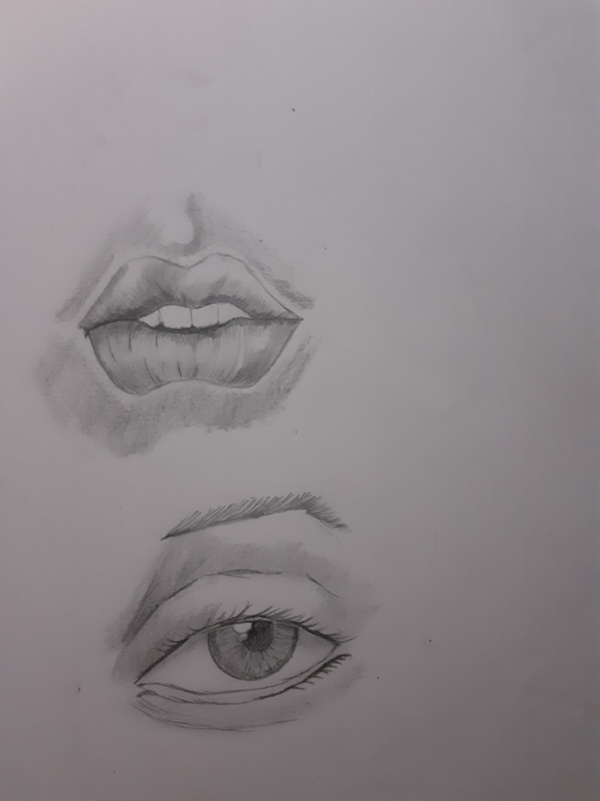
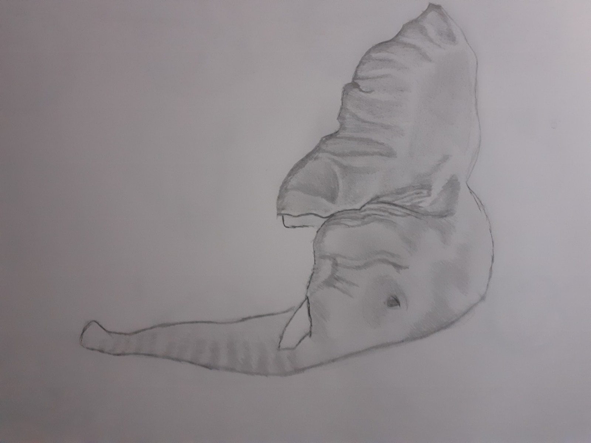
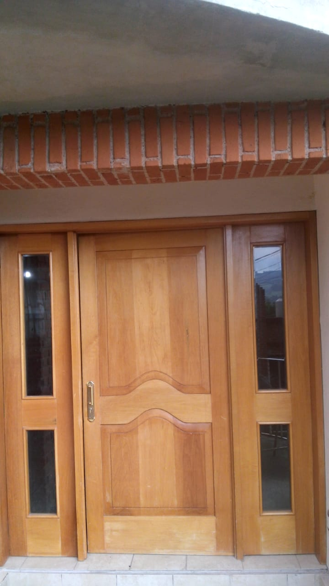
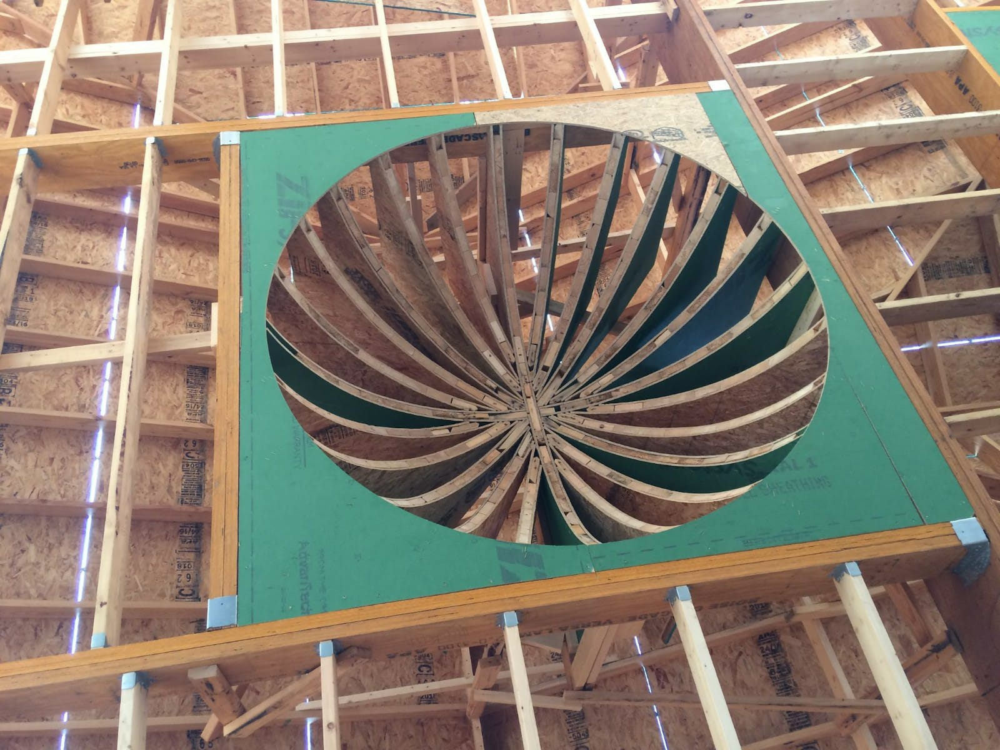

Fotografía.


La fotografía me fue una distracción que se convirtio en un pasatiempo, las memorias de mis experiencias guardadas en imagenes que me recuerdan momentos y personas es lo que lo hace importante para mí. El reto es buscar lugares que te inspiren que reflejen algo que signifiquen algo para mí eso me ha llevado a encontrar lugares diferentes y explorar mi ciudad.
Dibujo
-

- 
- 
El dibujo como la música es, mi escape de la realidad mi forma de expresarme.
"Prefiero dibujar antes que hablar. Dibujar es más rápido y deja menos espacio a las mentiras"
Le Corbusier
Es una frase que me quedo muy marcada al inicio de la carrera de arquitectura, lo comprendí desde el momento en que no podia expresar de manera clara mis ideas de diseño, hacer un dibujo isometrico del proyecto me ayudaba a expresar de manera más clara hacia donde dirigia mi idea de proyecto. Desde ese momento use el dibujo como una manera de expresión no solo de ideas, también de sentimientos.
Mi trabajo
- 
- 
-

Mis trabajos han sido muy variados desde que deje de estudiar he buscado la manera de salir adelante, siempre aprendiendo cossas nuevas, he trabajado como vendedor de farmacia, vendedor en una tienda naturista, ayudante de carpitero, carpintero de obra y he tenido diferentes emprendimientos. La suma de estas experiencias me han enseñado valores habilidades que me han llevado a trener habilidades de comunicación abstracción de ideas, empatia por los demás.
El trabajo en equipo siempre ha sido parte de mi vida laboral respetar el trabajo e ideas de los demás hace que los embientes laborales sean más sanos y los procesos de trabajos sean más ágiles y se cometan menos errores.
Mi amor por aprender cosas nuevas me ha llevado a aprender idiomas como inglés y un poco de alemán, y me acerco al mundo de desarrollo donde encontré mi pasión, por la proyección a futuro que tiene la carrera de desarrollador y la forma en la que puedo ayudar a personas a acercarse a un público global.